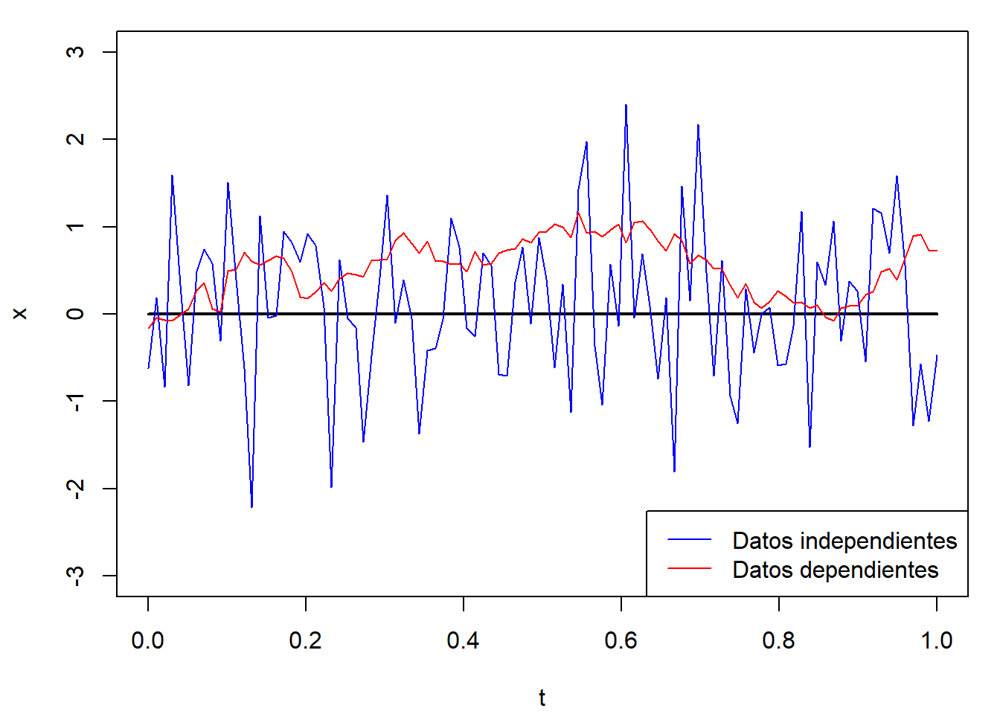
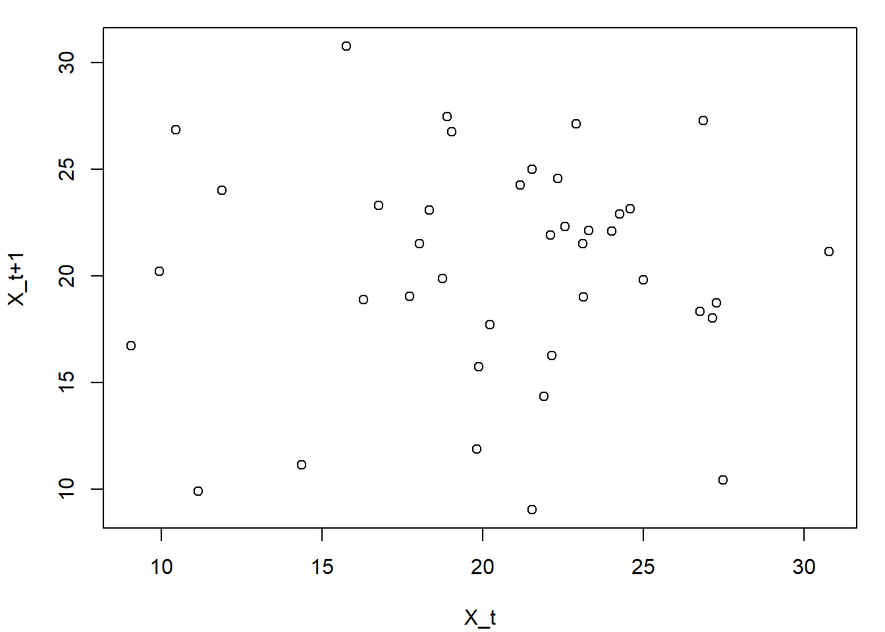
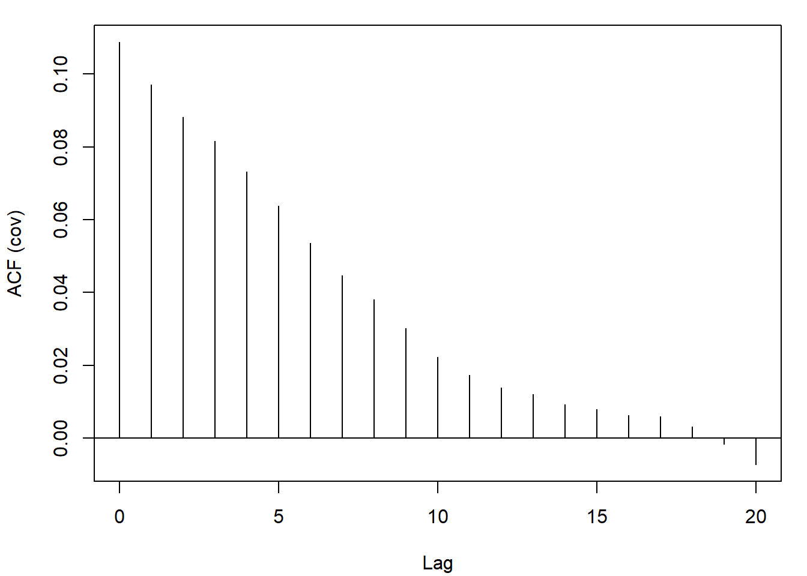

A.2 Diagnosis de la independencia
Los métodos “clásicos” de inferencia estadística se basan en suponer que las observaciones \(X_{1},\ldots,X_{n}\) son una muestra aleatoria simple (m.a.s.) de \(X\). Por tanto suponen que las observaciones son independientes (o los errores, en el caso de un modelo de regresión). La ausencia de aleatoriedad es difícil de corregir y puede influir notablemente en el análisis estadístico.
Si existe dependencia entre las observaciones muestrales (e.g. el conocimiento de \(X_{i}\) proporciona información sobre los valores de \(X_{i+1}\), \(X_{i+2}\), \(\ldots\)), los métodos “clásicos” no serán en principio adecuados (pueden conducir a conclusiones erróneas).
Esto es debido principalmente a que introduce un sesgo en los estimadores de las varianzas (diseñados asumiendo independencia).
Los correspondientes intervalos de confianza y contrastes de hipótesis tendrán una confianza o una potencia distinta de la que deberían (aunque las estimaciones de los parámetros pueden no verse muy afectadas).
Si \(X_{1}\) e \(X_{2}\) son independientes (\(Cov(X_{1},X_{2})=0\)): \[Var(X_{1}+X_{2})=Var(X_{1})+Var(X_{2})\]
En el caso general (dependencia): \[Var(X_{1}+X_{2})=Var(X_{1})+Var(X_{2})+2Cov(X_{1},X_{2})\]
Típicamente \(Cov(X_{1},X_{2})>0\) por lo que con los métodos “clásicos” (basados en independencia) se suelen producir subestimaciones de las varianzas (IC más estrechos y tendencia a rechazar \(H_0\) en contrastes).
Ejemplo A.1 (Datos simulados dependientes)
Consideramos un proceso temporal estacionario con dependencia exponencial (la dependencia entre las observaciones depende del “salto” entre ellas; ver Ejemplo 6.4 en la Sección 6.3).
n <- 100 # Nº de observaciones
t <- seq(0, 1, length = n)
mu <- rep(0, n) # Media
# mu <- 0.25 + 0.5*t
# mu <- sin(2*pi*t)
# Matriz de covarianzas
t.dist <- as.matrix(dist(t))
t.cov <- exp(-t.dist)
# str(t.cov)
# num [1:100, 1:100] 1 0.99 0.98 0.97 0.96 ...
# Simulación de las observaciones
set.seed(1)
library(MASS)
z <- rnorm(n)
x1 <- mu + z # Datos independientes
x2 <- mvrnorm(1, mu, t.cov) # Datos dependientes
plot(t, mu, type="l", lwd = 2, ylim = c(-3,3), ylab = 'x')
lines(t, x1, col = 'blue')
lines(t, x2, col = 'red')
legend("bottomright", legend = c("Datos independientes", "Datos dependientes"),
col = c('blue', 'red'), lty = 1)
En el caso anterior la varianza es uno con ambos procesos. Las estimaciones suponiendo independencia serían:
var(x1)## [1] 0.80676var(x2)## [1] 0.10992En el caso de datos dependientes se produce una clara subestimación de la varianza al emplear el estimador clásico.
A.2.1 Métodos para detectar dependencia
Es de esperar que datos cercanos en el tiempo (o en el espacio) sean más parecidos (dependientes) que datos más alejados, hablaríamos entonces de dependencia temporal (espacial o espacio-temporal).
En esta sección nos centraremos en el caso de dependencia temporal (unidimensional). Entre los métodos para detectar este tipo de dependencia destacaríamos:
Gráficos:
Secuencial / Dispersión frente al tiempo
Dispersión retardado
Correlograma
Contrastes:
Tests basados en rachas
Test de Ljung-Box
A.2.2 Gráfico secuencial
El gráfico de dispersión \(\{(i, X_{i}) : i = 1, \ldots, n \}\) permite detectar la presencia de un efecto temporal (en la tendencia o en la variabilidad).
En R podemos generar este gráfico con el comando plot(as.ts(x)), aunque sería necesario haber conservado el orden de recogida de los datos (alternativamente se puede guardar el orden o la fecha en una variable adicional).
Si se observa algún tipo de tendencia, los datos no serían aparentemente homogéneos (debería tenerse en cuenta la variable índice, o tiempo, como variable explicativa). También podría indicar la presencia de un “efecto aprendizaje”.
Ejemplo:
old.par <- par(mfrow = c(1, 2))
plot(datos, type = 'l')
plot(as.ts(datos))
Figura A.3: Ejemplos de gráficos secuenciales.
par(old.par)Es habitual que este tipo de análisis se realice sobre los residuos
de un modelo de regresión (e.g. datos <- residuals(modelo))
Este gráfico también podría servir para detectar dependencia temporal:
Valores próximos muy parecidos (valores grandes seguidos de grandes y viceversa) indicarían una posible dependencia positiva.
Valores próximos dispares (valores grandes seguidos de pequeños y viceversa) indicarían una posible dependencia negativa.
old.par <- par(mfrow = c(1, 3))
plot(x2, type = 'l', ylab = '', main = 'Dependencia positiva')
plot(x1, type = 'l', ylab = '', main = 'Independencia')
x3 <- x2 * c(1, -1)
plot(x3, type = 'l', ylab = '', main = 'Dependencia negativa')
par(old.par)pero suele ser preferible emplear un gráfico de dispersión retardado.
A.2.3 Gráfico de dispersion retardado
El gráfico de dispersión \(\{(X_{i},X_{i+1}) : i = 1, \ldots, n-1 \}\) permite detectar dependencias a un retardo (relaciones entre valores separados por un instante). En R podemos generar este gráfico con el comando:
plot(x[-length(x)], x[-1], xlab = "X_t", ylab = "X_t+1")old.par <- par(mfrow = c(1, 3))
plot(x2[-length(x2)], x2[-1], xlab = "X_t", ylab = "X_t+1",
main = 'Dependencia positiva')
plot(x1[-length(x1)], x1[-1], xlab = "X_t", ylab = "X_t+1",
main = 'Independencia')
plot(x3[-length(x3)], x3[-1], xlab = "X_t", ylab = "X_t+1",
main = 'Dependencia negativa')
par(old.par)Se puede generalizar al gráfico \(\{(X_{i},X_{i+k}) : i = 1, \ldots, n-k \}\) que permite detectar dependencias a \(k\) retardos (separadas \(k\) instantes).
Ejemplo:
# Gráfico de dispersion retardado
plot(datos[-length(datos)], datos[-1], xlab = "X_t", ylab = "X_t+1")
El correspondiente coeficiente de correlación es una medida numérica del grado de relación lineal (denominada autocorrelación de orden 1).
cor(datos[-length(datos)], datos[-1])## [1] 0.013441Ejemplo A.2 (Calidad de un generador aleatorio)
En el caso de una secuencia muy grande de número pseudoaleatorios (supuestamente independientes), sería muy difícil distinguir un patrón a partir del gráfico anterior. La recomendación en R sería utilizar puntos con color de relleno:
plot(u[-length(u)], u[-1], xlab="U_t", ylab="U_t+1", pch=21, bg="white")
Figura A.4: Ejemplos de gráficos de dispensión retardados de dos secuencias de longitud 10000.
Si se observa algún tipo de patrón indicaría dependencia (se podría considerar como una versión descriptiva del denominado “Parking lot test”). Se puede generalizar también a \(d\)-uplas \((X_{t+1},X_{t+2},\ldots,X_{t+d})\) (ver ejemplo del generador RANDU en Figura 2.1 de la Sección 2.1).
A.2.4 El correlograma
Para estudiar si el grado de relación (lineal) entre \(X_{i}\) e \(X_{i+k}\) podemos utilizar el coeficiente de correlación:
\[\rho\left( X_{i},X_{i+k}\right) = \frac{Cov\left( X_{i},X_{i+k}\right) } {\sigma\left( X_{i}\right) \sigma\left( X_{i+k}\right) }\]
En el caso de datos homogéneos (estacionarios) la correlación sería función únicamente del salto: \[\rho\left( X_{i},X_{i+k}\right) \equiv\rho\left( k\right)\] denominada función de autocorrelación simple (fas) o correlograma.
Su estimador es el correlograma muestral: \[r(k)=\frac{\sum_{i=1}^{n-k}(X_{i}-\overline{X})(X_{i+k}-\overline{X})} {\sum_{i=1}^{n}(X_{i}-\overline{X})^{2}}\]
En R podemos calcular las autocorrelaciones, y generar el gráfico correspondiente, con la función acf().
old.par <- par(mfrow = c(1, 3))
acf(x1, main = 'Independencia')
acf(x2, main = 'Dependencia positiva')
acf(x3, main = 'Dependencia negativa')
par(old.par)En caso de independencia es de esperar que las autocorrelaciones muestrales sean próximas a cero (valores “grandes” indicarían correlación positiva o negativa según el signo).
Suponiendo normalidad e independencia, asintóticamente: \[r(k)\underset{aprox.}{\sim}N\left( \rho(k),\frac{1}{n}\right)\] Por tanto, si el tamaño muestral es grande, podríamos aceptar \(H_0:\rho\left( k\right) = 0\) si: \[|r(k)|<\dfrac{2}{\sqrt{n}}\]
En el gráfico de autocorrelaciones muestrales (también denominado correlograma) se representan las estimaciones \(r(k)\) de las autocorrelaciones correspondientes a los primeros retardos (típicamente \(k<n/4\)) y los correspondientes intervalos de confianza bajo \(H_0\) (para detectar correlaciones significativas). No obstante, hay que tener en cuenta que estos intervalos de confianza son puntuales. Aunque las verdaderas correlaciones sean nulas, al aumentar el número de saltos aumenta la probabilidad de que alguna correlación muestral no esté contenida en el intervalo (no sería de extrañar que alguna esté un poco por fuera de los límites).
Ejemplo:
acf(datos) # correlaciones
La función acf() también permite estimar el covariograma45.
covar <- acf(x2, type = "covariance")
A.2.5 Test de rachas
Permite contrastar si el orden de aparición de dos valores de una variable dicotómica es aleatorio. Supongamos que \(X\) toma los valores \(+\) y \(-\) y que observamos una muestra del tipo: \[++++---+++--++++++----\] y nos interesa contrastar:
\[\left\{ \begin{array}[c]{l} H_0:\mathit{La\ muestra\ es\ aleatoria}\\ H_1:\mathit{La\ muestra\ no\ es\ aleatoria} \end{array}\right.\]
Una racha es una secuencia de observaciones iguales (o similares): \[\underbrace{++++}_{1}\underbrace{---}_{2}\underbrace{+++}_{3} \underbrace{--}_{4}\underbrace{++++++}_{5}\underbrace{----}_{6}\]
Una muestra con “muchas” o “pocas” rachas sugeriría que la muestra no es aleatoria (con dependencia negativa o positiva, respectivamente). Por tanto se puede emplear como estadístico del contraste: \[R=\text{"Número total de rachas en la muestra"}\]
Bajo la hipótesis nula de aleatoriedad: \[R\underset{aprox.}{\sim}N\left( 1+\frac{2n_{1}n_{2}}{n}, \frac{2n_{1}n_{2}(2n_{1}n_{2}-n)}{n^{2}(n-1)}\right)\] siendo \(n_{1}\) y \(n_{2}\) el número de signos \(+\) y \(-\) en la muestra, respectivamente (\(n_{1}+n_{2}=n\)). Para tamaños muéstrales pequeños (\(n<40\)), esta aproximación no es buena y conviene utilizar la distribución exacta (o utilizar corrección por continuidad). Los valores críticos de esta distribución están tabulados.
Este contraste se emplea también para variables continuas, se fija un punto de corte para dicotomizarlas. Normalmente se toma como punto de corte la mediana. En ese caso, si \(k=n_{1}\) (\(\simeq n_{2}\)): \[R\underset{aprox.}{\sim}N\left( k+1,\frac{k(k-1)}{2k-1}\right)\]
Se rechaza la hipótesis nula de aleatoriedad si el número de rachas es significativamente pequeño o grande. Si el tamaño muestral es grande, el \(p\)-valor será: \[p \simeq 2 P\left( Z \geq \left\vert \frac{R-E(R)}{\sqrt{Var(R)}} \right\vert \right)\]
En R podemos realizar este contraste con el comando:
tseries::runs.test(as.factor(x > median(x)))Ejemplo:
library(tseries)
runs.test(as.factor(datos > median(datos)))##
## Runs Test
##
## data: as.factor(datos > median(datos))
## Standard Normal = -0.442, p-value = 0.66
## alternative hypothesis: two.sidedAlternativamente, para evitar el cálculo del punto de corte (la mediana), requerido para dicotomizar la variable continua, se podría emplear una modificación de este contraste, el denominado test de rachas ascendentes y descendentes, en el que se generan los valores \(+\) y \(-\) dependiendo de si el valor de la secuencia es mayor o menor que el anterior (ver e.g. Downham, 1970). Este contraste es más adecuado para generadores aleatorios.
A.2.6 El contraste de Ljung-Box
Es un test muy utilizado (en series de tiempo) para contrastar la hipótesis de independencia. Se contrasta la hipótesis nula de que las primeras \(m\) autocorrelaciones son cero: \[\left\{\begin{array}[c]{l} H_0:\rho_{1}=\rho_{2}=\ldots=\rho_{m}=0\\ H_1:\rho_{i}\neq0\text{ para algún } i \end{array}\right.\]
Normalmente se elige \(m\) de forma que la estimación \(r(m)\) de \(\rho_{m}=\rho(m)\) sea “fiable” (e.g. \(m = 10\log_{10}n\) o \(m = n/4\)).
El estadístico del contraste es: \[Q=n(n+2)\sum_{k=1}^{m}\frac{r(k)^{2}}{n-k}\underset{aprox.}{\sim}\chi _{m}^{2}\text{, si }H_0\text{ es cierta.}\] Se rechaza \(H_0\) si el valor observado de este estadístico es grande (\(Q\geq \chi_{m,1-\alpha}^{2}\)) o, equivalentemente, si el p-valor es pequeño: \[p=P\left( {\chi_{m}^{2}}\geq Q\right)\]
Este contraste está implementado en la función Box.test(), estableciendo el argumento lag igual al número de saltos \(m\) y type = "Ljung".
Ejemplo:
# Contrastar si la primera autocorrelación es nula:
Box.test(datos, type = "Ljung") ##
## Box-Ljung test
##
## data: datos
## X-squared = 0.00783, df = 1, p-value = 0.93# Contrastar si las 5 primeras autocorrelaciones son nulas:
Box.test(datos, lag = 5, type = "Ljung") ##
## Box-Ljung test
##
## data: datos
## X-squared = 1.26, df = 5, p-value = 0.94NOTA: Cuando se trabaja con residuos de un modelo lineal, para contrastar que la primera autocorrelación es cero, es preferible emplear el test de
Durbin-Watson implementado en la función dwtest() del paquete lmtest.
Bibliografía
En algunos campos, como en estadística espacial, en lugar del covariograma se suele emplear el semivariograma \(\gamma(k) = C(0) - C(k)\).↩︎